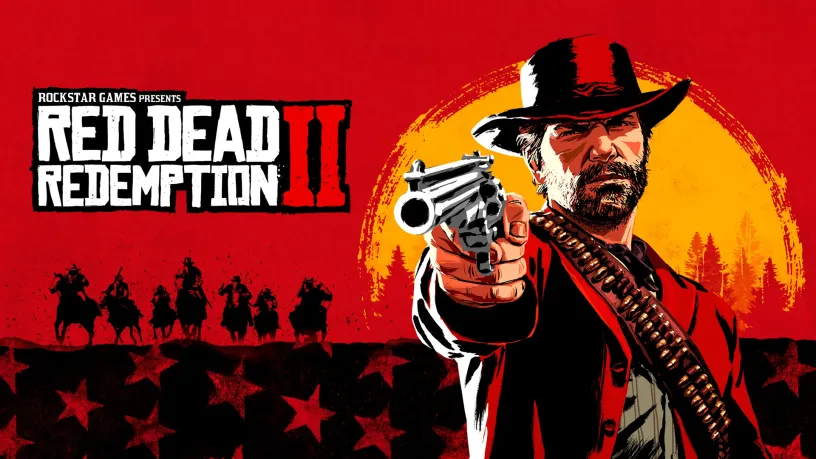

Descripción del Juego
Arthur Morgan, un veterano forajido y miembro principal de la banda de Dutch van der Linde. Tras un atraco fallido en la ciudad de Blackwater, la banda se ve obligada a huir de agentes federales y cazarrecompensas. El grupo debe sobrevivir robando y abriéndose paso mientras Arthur se debate entre sus propios principios morales y la lealtad hacia la figura de Dutch.
Desarrollador: Rockstar Games
Género: Mundo abierto / Acción-Aventura
Duración Estimada: Historia: 50h | 100%: 180h
Sistema de Honor
Tus acciones en el juego determinan la reputación moral de Arthur Morgan. Un honor alto o bajo modifica cómo reaccionan los ciudadanos, el tono de la música, la visión de Arthur e incluso las opciones de diálogo y el final de la historia.
Alto Honor (Héroe)
Descuentos en tiendas, interacciones amistosas y un tono de redención personal en la historia de Arthur.
Bajo Honor (Forajido)
Mayor probabilidad de botín en robos, animaciones de ejecuciones más agresivas y una actitud más despiadada de los NPCs.
Personajes Principales
Arthur Morgan
Protagonista
El brazo derecho de Dutch. Un forajido leal y experimentado que empieza a cuestionar el camino de la banda.
John Marston
Pistolero
Un joven protegido de Dutch que busca proteger a su familia mientras intenta sobrevivir al fin de la era del oeste.
Dutch van der Linde
Líder de la Banda
Un líder carismático e idealista que lucha por mantener libre a su banda frente al avance de la civilización.
Datos
Desarrollo: El juego tardó más de 8 años en desarrollarse y contó con la participación de más de 2.000 personas.
Fauna viva: Hay más de 200 especies de animales únicos, cada uno con comportamientos e inteligencias artificiales propias.
Guión masivo: El guión de la historia principal superó las 2.000 páginas y se grabaron más de 500.000 líneas de diálogo.